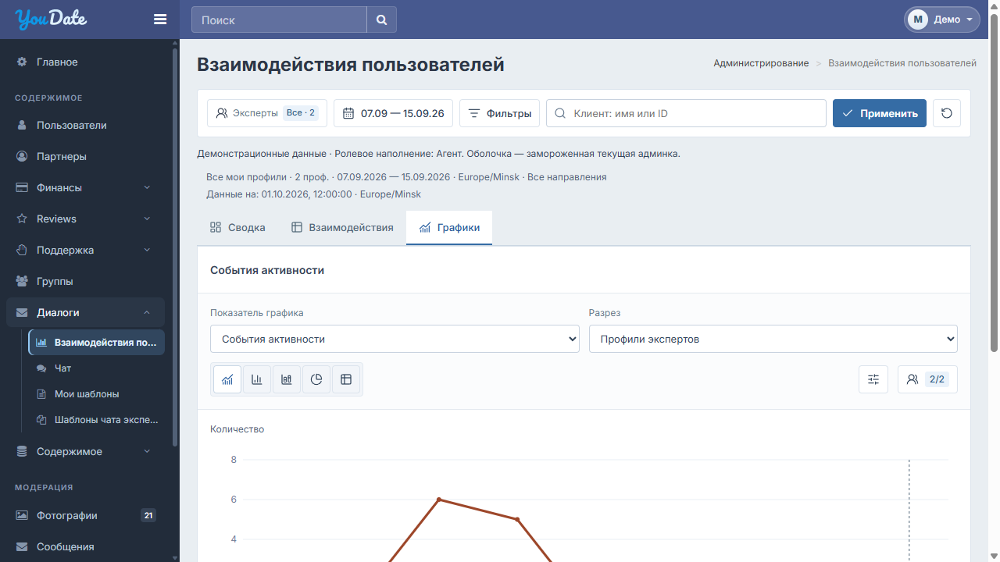
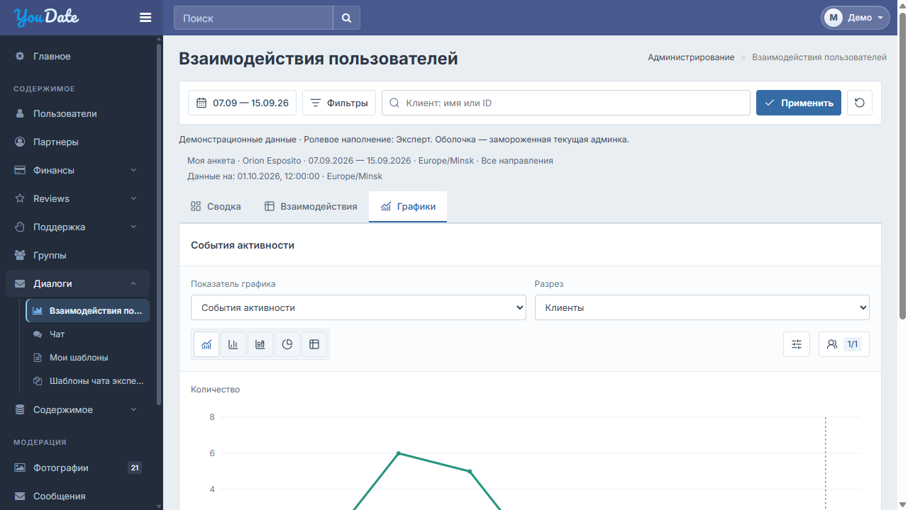

UI v8.1 · 25.10.2026 · агент принят Алексеем как образец. Три роли с общей типографикой и геометрией; разрешения и содержание различаются. Общая оболочка сайта сохраняется.


UI-проверка превью не подтверждает серверные роли, AJAX и реальные данные. В Excel оставлены поля для факта, сборки и доказательства.
| ID | Экран | Действие | Ожидаемый результат |
|---|---|---|---|
| INT-01 | Все роли | Открыть Сводку / Взаимодействия / Графики | Одинаковые CSS, типографика, рамки, отступы и иконки; содержание определяется ролью. |
| INT-02 | Админ / Агент | Открыть выбор экспертов и изменить выбор | Рамка36px; иконка, подпись и счётчик на общей оси. Открытое меню не сдвигает рамку. Эксперту этот контрол не добавлять. |
| INT-03 | Все роли | Выбрать обе даты | Штатный DateRangePicker сайта: диапазон сразу в черновике, календарь закрывается; отдельной кнопки подтверждения нет; отчёт прежний. |
| INT-04 | Все роли | Изменить фильтры → Применить → Сбросить | Данные меняются только общей Применить. Один штатный запрос; фильтры/счётчики и итоги согласованы. Сброс возвращает исходный scope. |
| INT-05 | Таблица | Пиктограммы / hover / keyboard focus | Компактные пиктограммы и точные подсказки; переключатель подписей работает. Не меняются выборка, разрешения и расчёты. |
| INT-06 | Таблица | Набор столбцов / Показатели / Сортировка | Единые строки12px/18px, иконки и отметки; меню внутри рабочей области. Выбор/все/снять/предустановки работают. |
| INT-07 | Таблица | Сортировка / размер страницы / итог | Видимые строки и итоги соответствуют выборке; парные показатели учитываются один раз, ссылка ведёт к основной строке. |
| INT-08 | Графики | Показатель / разрез / 5 видов | Единые поля и оси инструментов. Линии, столбцы, структура, доли и таблица используют одну выборку. |
| INT-09 | Графики | Параметры / участники / данные графика | Счётчик и иконка центрированы; панели в границах; выбор участников/сравнение/агрегация и readout согласованы. |
| INT-10 | Админ | Серверный доступ | Глобальные метрики repeatPlatform/platformLTV доступны только при действующем разрешении; UI не выдаёт права. |
| INT-11 | Агент / Эксперт | Попытка чужого scope / глобальной метрики | Сервер отклоняет запрос. Агент — закреплённые профили; эксперт — свой.11 разрешённых метрик; глобальные метрики скрыты и недоступны API. |
| INT-12 | Все роли | Нет данных / ошибка / нет источника / загрузка | Отличать0 от Нет данных; показывать загрузку/ошибку и штатное восстановление. Не сохранять устаревшие данные как свежие. |
| INT-13 | Все роли | 1280 / 1024 / 390 CSS px; Tab / Escape | Общие границы и центры; меню не уходит за workspace/viewport, заголовок и sidebar прежние. CSS-эмуляция не равна телефону. |
| INT-14 | Интеграция | Повторное монтирование / PJAX / уход | Один controller и один набор handlers/observers. При remount корректный teardown; никаких двойных запросов и висящих меню. |
| INT-15 | Оболочка | Сравнить до/после | Ни одного изменения global_custom, theme/vendor, шапки, sidebar, footer и посторонних страниц. Новые CSS только в #confideline-interactions. |
В integration — только функциональный блок; preview/assets и demo renderer на сайт не переносить. Финансы и цензура в эту поставку не входят.